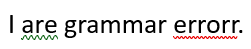

Eric Cameron (ericcameron.dev), June 24, 2024
Color vision deficiency (CVD) - or what we used to call color blindness - is an important consideration in design and is often overlooked.
I first encountered the challenges of color vision deficiency (CVD) in elementary school when I took the Ishihara tests (those colorful numbers inside colorful circles). I passed, but a friend struggled with red-green colorblindness. I became aware of the real-world impact at a young age. Later, while teaching Microsoft Word in 2001, I realized the significance of this issue when a student confided they couldn't distinguish between the green grammar check and the red spell check underlines (as shown below).
By the way, Microsoft didn't fix that until Word 2016, when they changed grammar error underlining to blue.
Some CVD facts, per EnChroma:- Rare in Women: 1/200
- Common in Men: 1/12
- Most Common Type: Red/Green CVD
It is important to consider when designing for web, or using screenshots or video, especially so if your audience demographic trends towards males.
Practical Solutions
- Use High Contrast Themes Use Windows Contrast Themes, or similar options in your OS of choice, for screenshots and video.
- Check Images for CVD Compatibility Use a free online tool such as COBLIS (color blindness simulator) to check images.
- Choose Accessible Color Schemes The WebAIM contrast checker will check if your colors pass the WCAG (Web Content Accessibility Guidelines) standards.
Considering users with CVD and incorporating these suggestions into your site will create more accessible content.